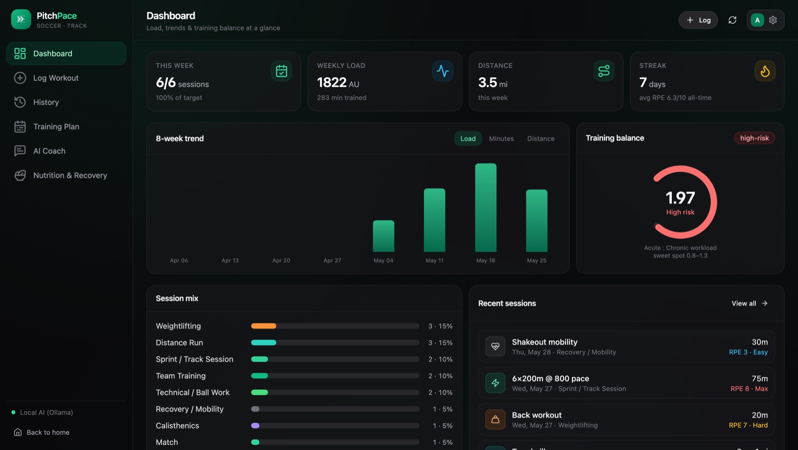
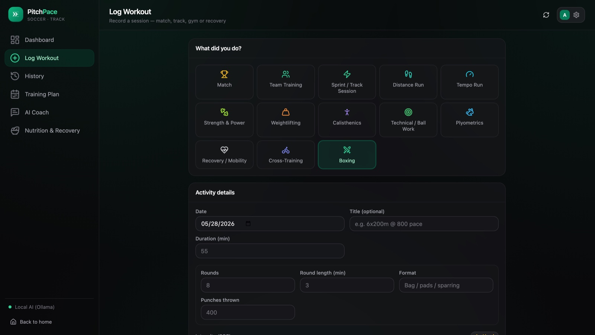
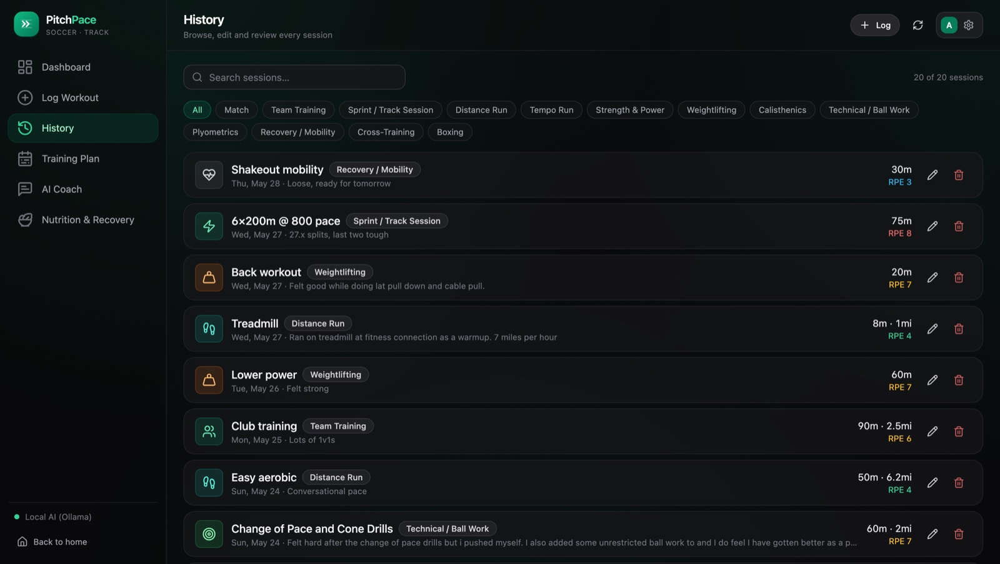
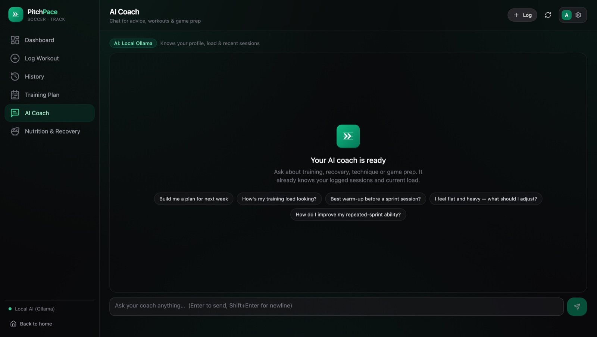
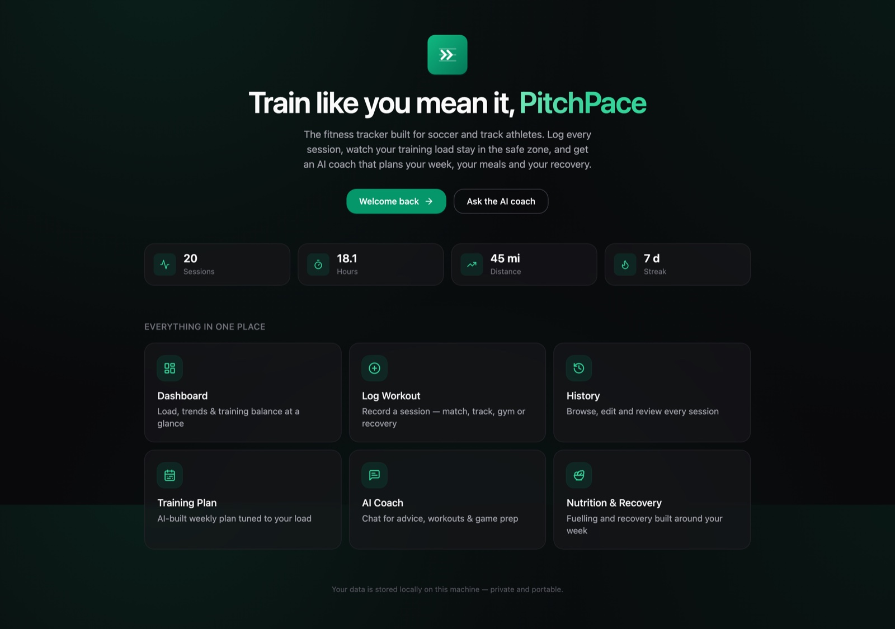

Dashboard
Load, trends and training balance at a glance — including an acute:chronic workload ratio to keep you out of the injury red zone.
A private, local-first training tracker. Log every session, keep your training load in the safe zone, and get an AI coach that plans your week, meals and recovery — powered by your own API key.
Open source on GitHub. No account. No tracking. Runs entirely on your machine.

Six tools that turn scattered sessions into a clear, coached plan — tuned to how soccer and track athletes actually train.
Load, trends and training balance at a glance — including an acute:chronic workload ratio to keep you out of the injury red zone.
Record a match, track session, gym lift, boxing round or recovery day — each activity type with its own tailored detail fields.
Browse, search, filter, edit and review every session you've ever logged — with intensity, distance and notes at your fingertips.
An AI-built weekly plan tuned to your current load and goals — progressive, periodised and respectful of your recovery.
Chat for advice, workouts and game prep. It already knows your profile, weekly load and recent sessions — so the answers fit you.
Fuelling and recovery guidance built around your week — sleep, mobility, deload timing and what to eat to back up hard days.
A clean dark interface that gets out of your way. Here's PitchPace running with a few weeks of training logged.

Pick from matches, runs, lifts, calisthenics, plyometrics, cross-training or boxing. Each type shows its own detail fields, so a sprint session and a boxing round are both logged properly.

Filter by type, search your notes, and edit any entry in place.

Use Claude with your key, or run it fully offline with local Ollama.

Your headline numbers and a jump-off point to everything PitchPace can do.
PitchPace runs on your computer. Your sessions live in a local database file; your AI key lives in your browser. We don't run a backend for your data, we don't have accounts, and we can't see any of it.
Best-quality coaching. Key stored in-browser only; requests go straight to Anthropic under your account.
Runs a model on your own hardware. Slower, but 100% offline and free.
Swap keys, switch to local, or clear your data anytime. Read the Privacy Policy.
Clone the repo, start one script, and open it in your browser. Needs Python 3.11+ and Node 20+. The entire source is yours to inspect, modify and self-host.
Open source MIT license. Full source, no hidden backend.
Download the source from GitHub to your machine.
One script builds the UI and serves everything on a single port.
In Settings, paste your Anthropic Claude key — or use local Ollama for offline AI.
Open source, MIT licensed, and fully private. You control everything — fork it, deploy it, modify it. Start logging in minutes.
Fork on GitHub